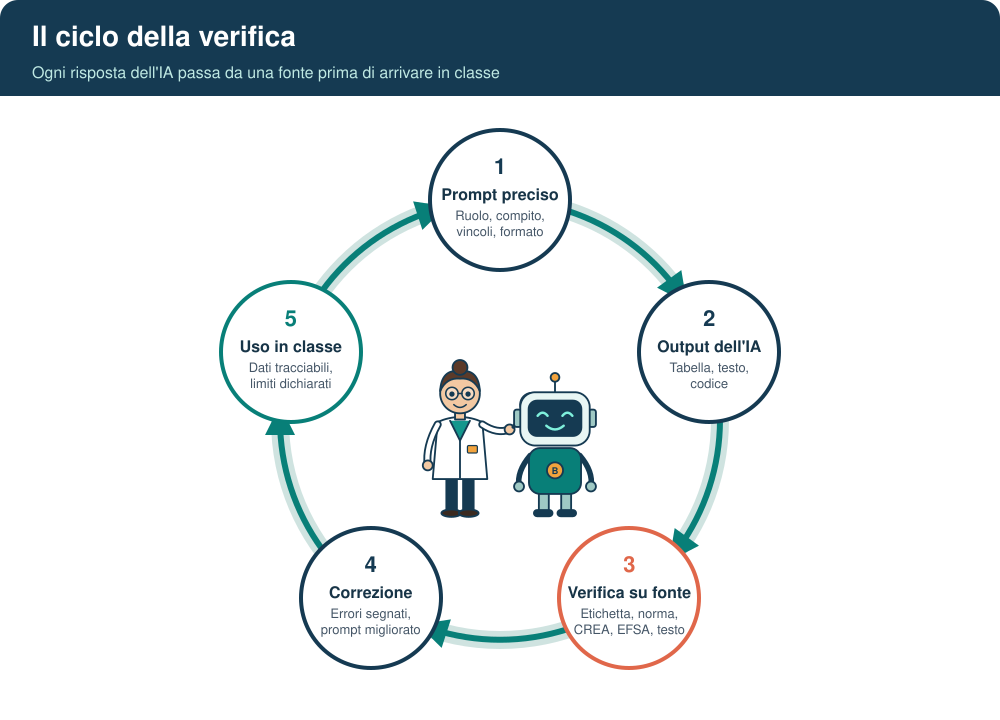
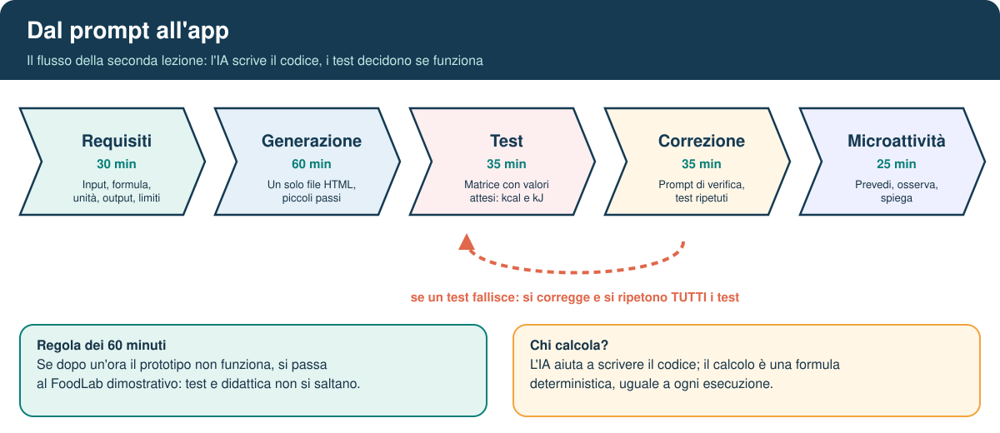
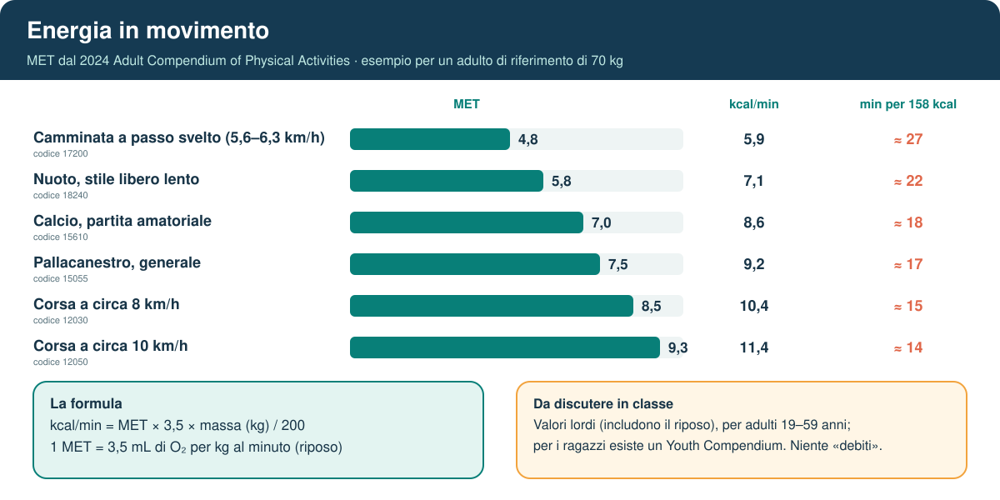
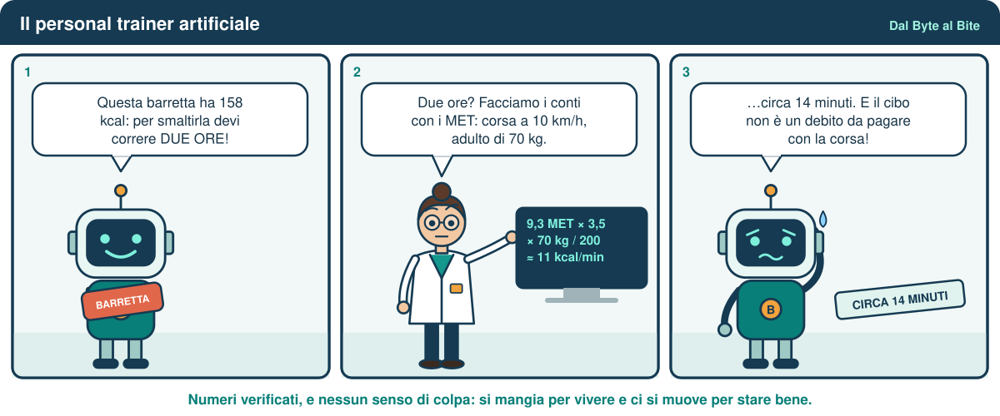

Dal prompt all'app
Lezione 2 · 15 dicembre 2026 · 14:00–18:00
Costruire con l'IA un simulatore per l'educazione alla salute, e dimostrare con i test che funziona.

Dal problema didattico al prototipo validato
Il metodo della lezione 1, in un'immagine

Il flusso di oggi

Dal piatto alla pista: i MET

Una barretta da 40 g: quanta energia, quanto movimento?
Valori dell'etichetta B per una barretta (40 g): carboidrati esclusi polioli 7,2 g · proteine 12 g · grassi 6 g · fibre 4 g · polioli 8 g. Cambiate attività e passate al modello 4–4–9: che cosa cambia?
La risposta alla domanda della palestra

Che cosa deve poter esplorare
lo studente su un tema di salute?
Esempio: come cambia l'energia di una porzione al variare dei macronutrienti, e perché l'etichetta conta anche fibre e polioli.
Prima i requisiti, poi il codice. Un simulatore senza domanda didattica è solo un giocattolo.
Una specifica in una pagina
| Voce | Esempio per FoodLab |
|---|---|
| Input | C, P, G in grammi (0–100); opzionale: fibre, polioli |
| Formula | E = 4C + 4P + 9G (kcal); modalità UE con allegato XIV |
| Unità | g in ingresso; kcal e kJ in uscita, sempre esplicite |
| Output | Energia, % su 2000 kcal, ripartizione a barre |
| Comandi | Reset, uso da tastiera, schermo piccolo |
| Limiti | Cosa il modello trascura; nessuna indicazione individuale |
Un buon prompt per generare codice
Agisci come sviluppatore web e docente di Scienze naturali. Genera UN SOLO file HTML completo con CSS e JavaScript incorporati, senza dipendenze esterne. Costruisci un simulatore denominato FoodLab per calcolare l'energia teorica di una porzione dalla massa in grammi di carboidrati disponibili, proteine e grassi: E(kcal)=4*C+4*P+9*G. Crea tre cursori da 0 a 100 grammi, il valore energetico aggiornato in tempo reale, la percentuale rispetto all'assunzione di riferimento di un adulto medio (2000 kcal), un grafico a barre di ripartizione energetica, unità esplicite, pulsante reset e una sezione «Limiti del modello». Estensione facoltativa: una modalità «coefficienti UE» che aggiunge fibre (2 kcal/g, 8 kJ/g) e polioli (2,4 kcal/g, 10 kJ/g) e mostra l'energia anche in kJ calcolata con i coefficienti in kJ (17, 17, 37). Seconda estensione facoltativa: un pannello «energia in movimento» che, scelta un'attività con il suo valore MET (2024 Adult Compendium of Physical Activities) e una massa di riferimento di 70 kg modificabile, calcola i minuti equivalenti con kcal/min = MET × 3,5 × massa / 200, con una nota che spieghi che il cibo non va «compensato» con l'esercizio. Non chiamare il calcolo «intelligenza artificiale». Non fornire indicazioni sanitarie individuali. Usa HTML semantico e un layout responsive. Dopo il codice indica almeno cinque test numerici da eseguire.
Cinque consigli per non perdersi
- Salvate il codice come file .html e apritelo nel browser.
- Una modifica per volta: chiedete un miglioramento, provate, poi il successivo.
- Tenete le versioni (v1, v2, v3…) e annotate che cosa cambia.
- Chiedete all'IA di spiegare le righe del calcolo.
- Se qualcosa si rompe, incollate l'errore e tornate all'ultima versione funzionante.
Regola dei 60 minuti
Se alle 15:50 il prototipo non funziona, si passa al FoodLab dimostrativo: test e progettazione didattica non si saltano.
Pausa · 10 minuti
Al rientro: la prova dei test.
La matrice dei test
| Modello | C | P | G | Fibre | Polioli | Atteso |
|---|---|---|---|---|---|---|
| 4–4–9 | 0 | 0 | 0 | 0 | 0 | 0 kcal |
| 4–4–9 | 10 | 0 | 0 | 0 | 0 | 40 kcal |
| 4–4–9 | 0 | 0 | 10 | 0 | 0 | 90 kcal |
| 4–4–9 | 45 | 12 | 8 | 0 | 0 | 300 kcal |
| UE | 45 | 12 | 8 | 6 | 0 | 312 kcal / 1313 kJ |
| UE | 66 | 11 | 12 | 8 | 0 | 432 kcal / 1817 kJ |
| UE | 18 | 30 | 15 | 10 | 20 | 395 kcal / 1651 kJ |
Proviamo insieme i primi casi
Perché i test sono obbligatori

Il simulatore moltiplica i grassi per 4. Quale caso lo scopre per primo?
Un caso «isolato» dà 40 invece di 90 e indica subito quale coefficiente è sbagliato. Il caso completo segnala un errore, ma non dice dove.
C 45 · P 12 · G 8: quanti kJ secondo l'allegato XIV?
Per le etichette valgono i coefficienti propri in kJ dell'allegato XIV. Test da aggiungere: il simulatore usa 17, 17, 37 o converte le kcal? Il prompt 5 lo chiede.
Checklist di verifica del codice
- Accuratezza del calcolo
- Gestione dei valori zero
- Unità di misura esplicite
- kJ con coefficienti in kJ
- Uso da tastiera
- Leggibilità su smartphone
- Coerenza scientifica
- Nessuna indicazione sanitaria individuale
Dopo ogni modifica si ripetono tutti i test e si annota che cosa è cambiato.
Esamina il codice HTML del simulatore FoodLab che ti fornirò. Controlla accuratezza del calcolo, gestione dei valori zero, unità di misura, calcolo dei kJ con i coefficienti in kJ dell'allegato XIV del Regolamento (UE) 1169/2011 (e non con la semplice conversione delle kcal), accessibilità da tastiera, leggibilità su smartphone, coerenza scientifica e assenza di indicazioni sanitarie individuali. Proponi una matrice di test con input, output atteso e risultato. Restituisci il codice completo corretto e descrivi precisamente ogni modifica. Non aggiungere API, connessioni esterne né funzionalità non richieste.
Prevedi · Osserva · Spiega
Aggancio alla salute: lettura consapevole delle etichette con valori di popolazione (linee guida CREA, LARN). Nessun calcolo di fabbisogni personali.
Sei un co-progettista di didattica delle Scienze naturali. A partire da un simulatore che calcola l'energia di una porzione dai grammi di carboidrati, proteine, grassi e fibre, progetta una microattività di 20 minuti di educazione alla salute per una classe del liceo scientifico, adatta a una lezione di scienze motorie, con struttura prevedi-osserva-spiega. Puoi collegare l'energia della porzione all'intensità delle attività (valori MET del 2024 Adult Compendium of Physical Activities), evitando la logica del «compensare» il cibo con l'esercizio. Prevedi: una previsione da formulare, un input da variare, che cosa osservare, tre domande di spiegazione graduate e un limite del modello da discutere. Usa soltanto valori di riferimento generali di popolazione e non formulare indicazioni dietetiche individuali. Indica le fonti istituzionali da consultare.
Autovalutazione e rubrica
13 quesiti
Nella sezione «Verifica» della pagina. Suggerimenti senza soluzioni. Obiettivo: almeno il 70%.
| Criterio (0–2) |
|---|
| Correttezza scientifica |
| Tracciabilità |
| Verifica dei risultati |
| Utilizzabilità didattica |
| Uso responsabile per la salute |
Che cosa porto in classe
- Simulatore HTML validato
- Matrice dei test compilata
- Microattività prevedi-osserva-spiega
- Il ciclo della verifica, per ogni uso dell'IA
Grazie! Esportate gli elaborati e caricateli nella cartella di consegna.